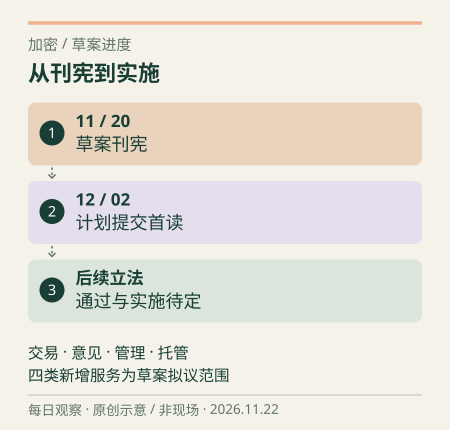
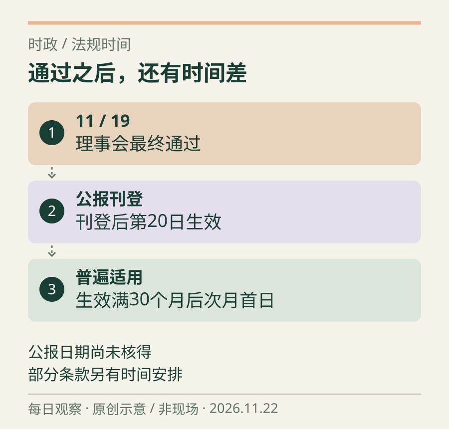
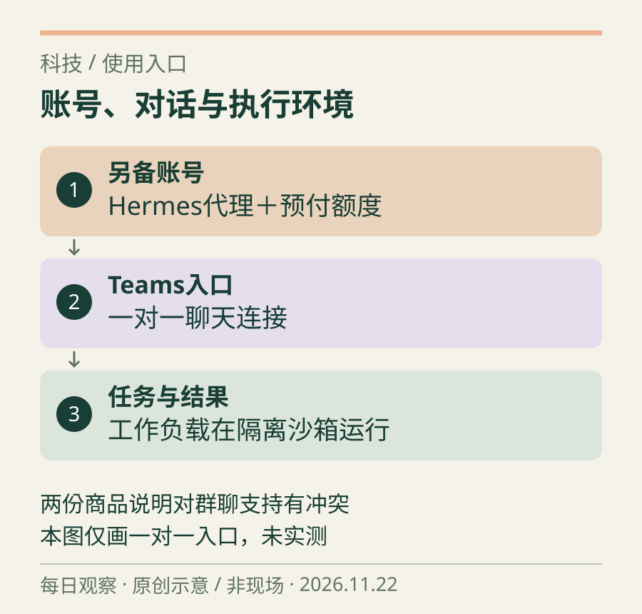

本期原创图像说明
每日观察编辑以代码绘制SVG，供本期刊用；不含第三方照片、商标、图标或界面截图。示意图不是现场或实测记录，不代表来源方背书。
香港拟把四类虚拟资产服务纳入规管，草案已刊宪
作者／署名：每日观察 · 原创示意图；2026年11月22日。

来源与日期
- www.info.gov.hk ↗ · 2026-11-20 17:15 Asia/Hong_Kong
欧盟通过跨境成年人保护法规，代表资格互认仍有实施时间差
作者／署名：每日观察 · 原创示意图；2026年11月22日。

来源与日期
- www.consilium.europa.eu ↗ · 2026-11-19；页面复核日期11-20
- data.consilium.europa.eu ↗ · 2026-11-04 文本日期；不是公报日期
- oeil.europarl.europa.eu ↗ · 2026-10-20
Hermes 走进 Teams 后，企业仍要分别看入口、共享与执行权限
作者／署名：每日观察 · 原创示意图；2026年11月22日。

来源与日期
- nousresearch.com ↗ · 2026-11-18
- marketplace.microsoft.com ↗ · 页面未标发布日期
- marketplace.microsoft.com ↗ · 页面未标发布日期
- techcommunity.microsoft.com ↗ · 2026-11-17
- learn.microsoft.com ↗ · 平台现行文档，非Hermes产品发布日
- learn.microsoft.com ↗ · 平台现行文档，非Hermes产品发布日
- learn.microsoft.com ↗ · 平台现行文档，非Hermes产品发布日
浮屏把截图做成锁屏卡片，便利以云端识别为前提
作者／署名：每日观察 · 原创示意图；2026年11月22日。

来源与日期
- sspai.com ↗ · 2026-11-20
- apps.apple.com ↗ · 页面未标固定发布日期；抓取缓存非实时结账
- floato.thoamsy.app ↗ · 标示生效日期2026-11-17
科斯塔预算谈判稿纳入数字服务财源方案，开征仍待立法
作者／署名：每日观察 · 原创示意图；2026年11月22日。

来源与日期
- www.consilium.europa.eu ↗ · 2026-11-21 11:43 页面时间，未转换时区
- data.consilium.europa.eu ↗ · 2026-11-21
- www.consilium.europa.eu ↗ · 会议预告；尚未召开
- eur-lex.europa.eu ↗ · 2016-06-07 合并条约文本